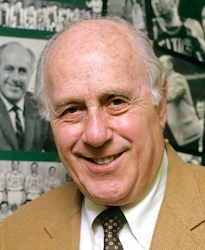
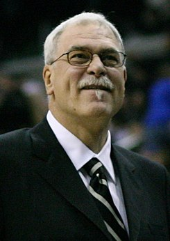
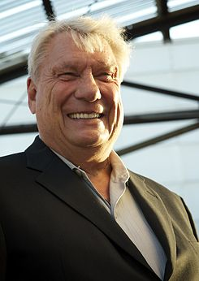

Red Auerbach
Arnold Jacob «Red» Auerbach (20 de septiembre de 1917-28 de octubre de 2006) fue un prestigioso e influyente entrenador de baloncesto de Washington Capitols, Tri-Cities Blackhawks y Boston Celtics. Tras su retirada de los banquillos, trabajó como presidente y ejecutivo de los Celtics hasta su muerte. Como entrenador, ganó 938 partidos (récord a su retirada) y nueve campeonatos de la NBA, dos menos que Phil Jackson. Como mánager general y presidente de los Celtics, ganó siete títulos más, para un total de 16 en 29 años, siendo una de las personalidades más exitosas en la historia del deporte norteamericano profesional. Más allá de los títulos, Auerbach es recordado como un pionero del baloncesto moderno, redefiniendo este deporte como un deporte dominado por el juego en equipo y la buena defensa más que por el trabajo individual, además de introducir el contraataque como una potente arma ofensiva. Entrenó a muchos jugadores que posteriormente ingresarían en el Basketball Hall of Fame, pero, más importante, Auerbach fue vital en el derribo de las barreras raciales en la NBA. Hizo historia al seleccionar en el Draft al primer jugador afrodescendiente de la NBA, Chuck Cooper, en 1950, y 14 años más tarde introdujo el primer quinteto totalmente negro de la historia. Auerbach hizo popular su costumbre de fumarse puros de la victoria cuando pensaba que el partido estaba decidido, un hábito que se hizo de culto en Boston. Por sus logros, Auerbach recibió multitud de honores. En 1967, el Entrenador del Año de la NBA, premio que ganó en 1965, fue nombrado como "Trofeo Red Auerbach", y dos años más tarde fue incluido en el Basketball Hall of Fame. En 1981 fue elegido Ejecutivo del Año, además de ser elegido posteriormente como uno de los 15 mejores entrenadores de la historia de la NBA (1996) y en 1985 ser retirada la camiseta de los Celtics con el dorsal 2 en su honor. En 2022 fue incluido en Los 15 mejores entrenadores de la historia de la NBA.
Phil Jackson
Philip Douglas "Phil" Jackson (Deer Lodge, Montana, Estados Unidos, 17 de septiembre de 1945) es un exentrenador y exjugador de la National Basketball Association (NBA). Como jugador, Phil Jackson consiguió dos campeonatos de la NBA, y como entrenador tiene el récord absoluto con 11 títulos, superando la anterior marca histórica de 9 campeonatos como entrenador de Red Auerbach (de los Boston Celtics). El 8 de mayo de 2011 dijo adiós a su carrera como entrenador con Los Angeles Lakers en las semifinales de la Conferencia Oeste, que perdieron contra Dallas Mavericks por 4-0. El 18 de marzo de 2014 es presentado como nuevo presidente de los Knicks. Jackson es conocido por su aplicación del "triángulo ofensivo" ideado por Tex Winter, así como por un método holístico de entrenamiento que ve de la filosofía oriental, lo que le ha valido el mote de "Maestro Zen". (Jackson ha citado al libro de Robert Pirsig, "Zen y el Arte del Mantenimiento de Motocicletas", como una de las principales guías en su vida). También se ha servido de prácticas espirituales propias de los nativos americanos, como reseñó en su libro "Sacred Hoops". Ha escrito varios libros exitosos sobre sus estrategias baloncestísticas y sus diferentes equipos. En 1992 le fue concedido el Premio Roughrider, distinción propia del estado de Dakota del norte. En el 2007, Jackson fue elegido para entrar en la Basketball Hall of Fame.
Don Nelson
Nelson cogió el mando de general mánager y entrenador de Milwaukee Bucks en 1976, y comenzó a mostrar su impecable habilidad para realizar traspasos beneficiarios para sus equipos. El primero fue recibir a Marques Johnson (que posteriormente tendría una sólida carrera en los Bucks) a cambio de Swen Nater de Buffalo Braves. En 1983 y 1985 recibió el premio al Mejor Entrenador del Año. También fue en Milwaukee donde Nelson empezó a ser reconocido por su heterodoxa e innovadora filosofía del baloncesto. En el equipo permanecería diez temporadas, siete de ellas por encima de las 50 victorias y varios campeonatos de división. Tras un hiato de un año, se convirtió en entrenador y vicepresidente de Golden State Warriors, donde sería nombrado mejor entrenador por tercera vez. En los Warriors inculcó un sistema ofensivo rápido y efectivo. Solía usar en el quinteto titular tres bases/escoltas, como eran Mitch Richmond, Tim Hardaway y Sarunas Marciulionis, y dos aleros, en este caso Chris Mullin, y Rod Higgins haciendo las funciones de pívot. Con esta inusual táctica, lideró a los Warriors a temporadas exitosas y muchas apariciones en playoffs. Posteriormente, llegarían al equipo los talentosos Chris Webber y Latrell Sprewell. Tras cuatro temporadas, abandonó el equipo por indiferencias con Webber tras un comienzo de 14-31. En el Mundial de Toronto de 1994 fue el entrenador del "Dream Team II" que se llevó la medalla de oro. En 1995, Nelson se enroló con los New York Knicks, equipo que dirigiría desde julio hasta marzo de 1996. Nelson tuvo problemas con varios jugadores, y lideró a New York a un comienzo de temporada de 34-25. Nelson trató de convencer al club para traspasar a la estrella Patrick Ewing, para así tener opciones de negociar por Shaquille O'Neal, que ese verano se convertía en agente libre. Fiel a sus principios, Nelson continuó con su juego ofensivo y rápido, que contrastaba con el estilo brusco y defensivo que caracterizaba a esos Knicks de Patrick Ewing, Anthony Mason y Charles Oakley. En 1997, fue nombrado entrenador y general mánager de Dallas Mavericks, un equipo por entonces profundamente perdedor, pero con adquisiciones como las de Dirk Nowitzki y Steve Nash, además de Michael Finley y Shawn Bradley que ya estaban en el equipo, convirtió a los Mavs en un bloque tremendamente competitivo. Lideró al equipo a cuatro temporadas consecutivas por encima de las 50 victorias. A pesar de formar uno de los mejores equipos ofensivos de la liga, en cuanto a defensa interior flojeaba en demasía, contando en la pintura con Raef LaFrentz, Shawn Bradley y Dirk Nowitzki, hombres muy flojos en defensa. En marzo de 2005, Nelson dejó el equipo siendo reemplazado por Avery Johnson, y nombrando a su hijo Donnie Nelson su sustituto como general mánager. El 30 de agosto de 2006, firmó por Golden State Warriors. El 8 de abril de 2010 consiguió el récord de más victorias como entrenador de la NBA. Nelson fue despedido de los Warriors el 27 de septiembre de 2010. El 2 de abril de 2012, se anunció que Nelson pasaría a formar parte del Naismith Memorial Basketball Hall of Fame, entre los elegidos en ese año. Su elección se hizo oficial el 7 de septiembrede ese mismo año.